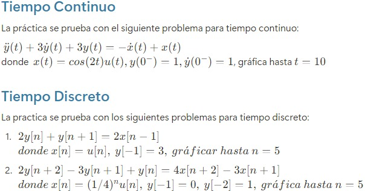
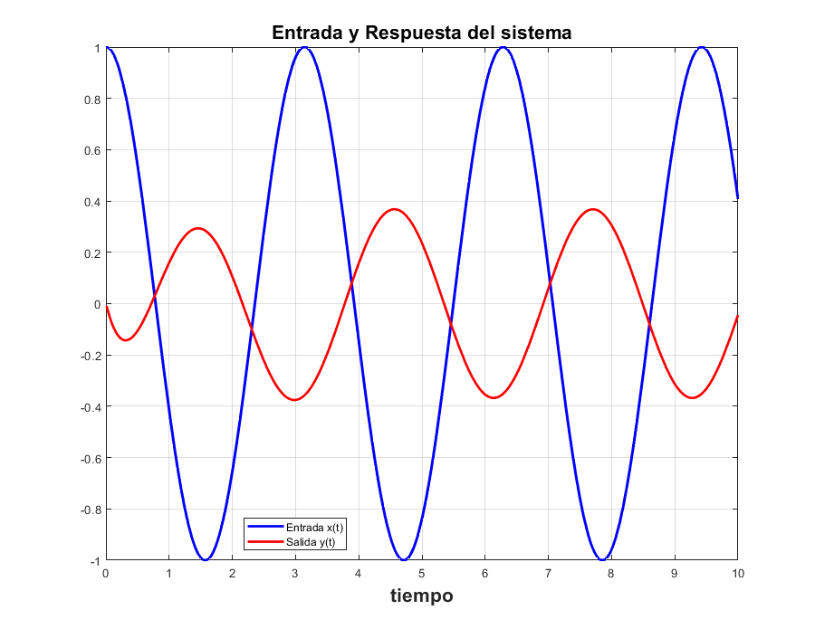
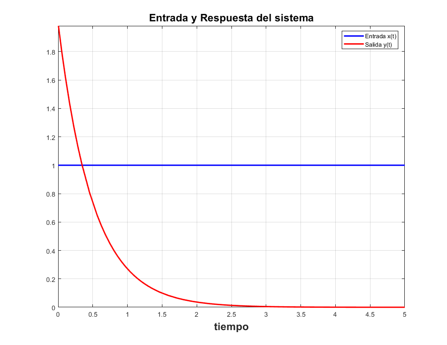
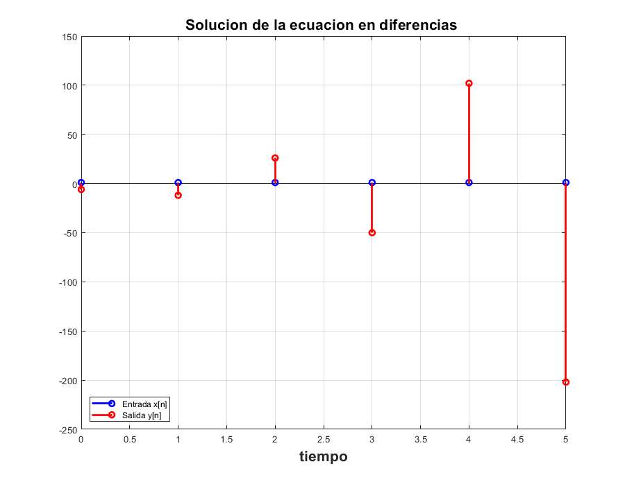
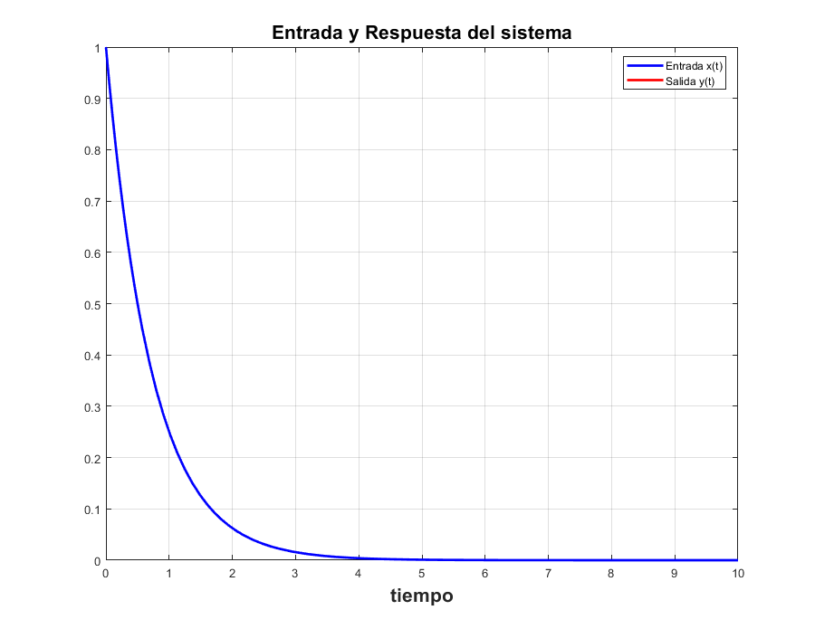
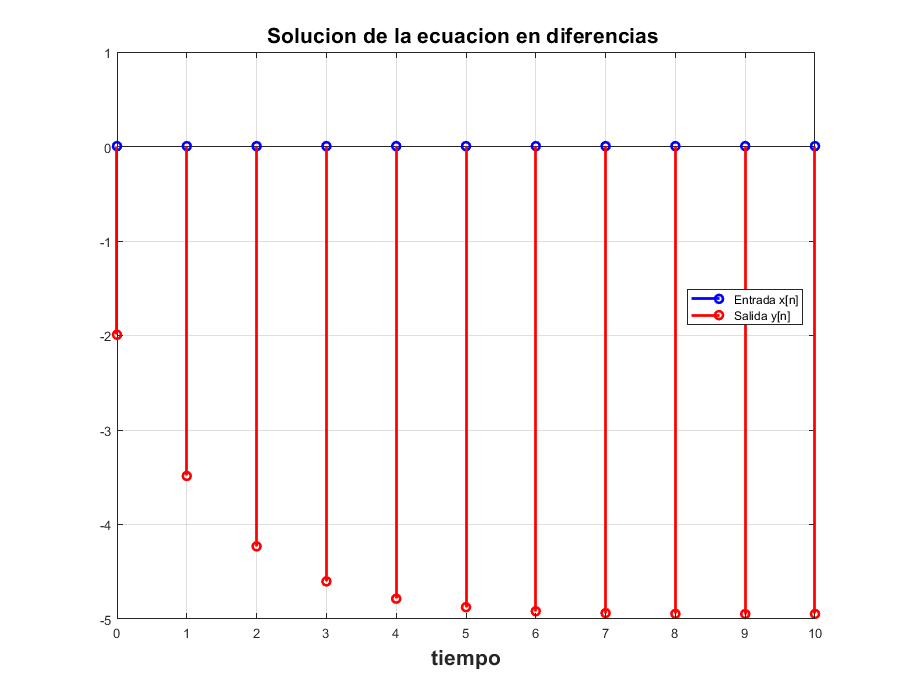

Practica 9: SISTEMAS DIFERENCIALES Y EN DIFERENCIAS
Contents
Integrantes
- Barrera Martinez Paola Angelica
- Espino Chavez Brandon Daniel
- Gonzalez Lopez Dani
- Villavicencio Salinas Miguel Angel
- Zetina Arellano Luis Enrique
Objetivo
Para sistemas diferenciales realiza un programa con las siguientes características: 1- Muestra la función de transferencia del sistema 2- Muestra la respuesta al impulso (simbólico, gráfica) 3- Muestra la respuesta a entrada cero (simbólico, gráfica) 4- Muestra la respuesta a estado cero (simbólico, gráfica) 5- Muestra la respuesta total (simbólico, gráfica) 6- La respuesta total al escalón con condiciones iniciales 0 (simbólico, gráfica) 7- Usando subplot, depliega una figura con 5 gráficas
Entregables sistemas en diferencias Para sistemas diferenciales realiza un programa con las siguientes características: 1- Muestra la función de transferencia del sistema 2- Muestra la respuesta al impulso (simbólico, gráfica, ver KroneckerDelta) 3- Muestra la respuesta a entrada cero (simbólico, gráfica) 4- Muestra la respuesta a estado cero (simbólico, gráfica) 5- Muestra la respuesta total (simbólico, gráfica) 6- La respuesta total al escalón con condiciones iniciales 0 (simbólico, gráfica) 7- Usando subplot, depliega una figura con 5 gráficas
Desarrollo
Para el desarrollo se tienen que resolver cada uno de los siguientes problemas comenzando una nueva sección para cada uno de ellos. Para cada problema se tendrán que hacer las modíficaciones necesarias al código de ejemplo, convendría entonces pensar en realizar una modificación general de tal manera que el programa funcione para la mayoria.

Tiempo continuo Problema 1 Laplace
Respuesta del sistema
syms t sympref('HeavisideAtOrigin',1); laplace2016a([3 3 1],[1 -1],[1 1],cos(2*t)*heaviside(t),10)
APLICAMOS TRANSFORMADA DE LAPLACE y subtituimos condiciones iniciales
2
3 Y(s) - s + 3 s Y(s) + s Y(s) - 4
=
X(s) - s X(s)
SUBSTITUIMOS LA TRANSFORMADA DE LA ENTRADA
2
3 Y(s) - s + 3 s Y(s) + s Y(s) - 4
=
2
s s
------ - ------
2 2
s + 4 s + 4
DESPEJAMOS Y(s)
Y(s)=
3 2
s + 3 s + 5 s + 16
----------------------------
4 3 2
s + 3 s + 7 s + 12 s + 12
DESARROLLAMOS LAS FRACCIONES PARCIALES DE Y(s)
Y(s)=
50 s 142 13 s 8
---- + --- ---- - --
37 37 37 37
------------ - ---------
2 2
s + 3 s + 3 s + 4
Aplicamos transformada inversa, asi la solución es
y(t)=
sin(2 t) 4 cos(2 t) 13
---------- - -----------
37 37
/ / sqrt(3) t \ \
| sqrt(3) sin| --------- | 67 |
/ 3 t \ | / sqrt(3) t \ \ 2 / |
exp| - --- | | cos| --------- | + --------------------------- | 50
\ 2 / \ \ 2 / 75 /
+ ------------------------------------------------------------------
37

Problema 1 Fourier
Respuesta a condiciones iniciales igual a 0
syms t sympref('HeavisideAtOrigin',1) fourier2016a([3 3 1],[1 -1],cos(2*t)*heaviside(t),10)
ans =
1
APLICAMOS TRANSFORMADA DE FOURIER
2
3 Y(w) - w Y(w) + w Y(w) 3i
=
X(w) - w X(w) 1i
SUBSTITUIMOS LA TRANSFORMADA DE LA ENTRADA
2
3 Y(w) - w Y(w) + w Y(w) 3i
=
pi dirac(w - 2) pi dirac(w + 2) / pi dirac(w - 2)
#1 + #2 + --------------- + --------------- - w | #1 + #2 + ---------------
2 2 \ 2
pi dirac(w + 2) \
+ --------------- | 1i
2 /
where
1
#1 == -------------
2 (w 1i - 2i)
1
#2 == -------------
2 (w 1i + 2i)
DESPEJAMOS Y(w)
Y(w)=
/ pi dirac(w - 2) pi dirac(w + 2)
| #1 + #2 + --------------- + ---------------
\ 2 2
/ pi dirac(w - 2) pi dirac(w + 2) \ \ 2
- w | #1 + #2 + --------------- + --------------- | 1i |/(- w
\ 2 2 / /
+ w 3i + 3)
where
1
#1 == -------------
2 (w 1i - 2i)
1
#2 == -------------
2 (w 1i + 2i)
DESARROLLAMOS LAS FRACCIONES PARCIALES DE Y(w)
Y(w)=
2 13 2 13
- -- + --i -- + --i
37 74 37 74
---------- + --------
w - 2 w + 2
/ w (37 pi dirac(w - 2) + 37 pi dirac(w + 2) - 26) 1i pi dirac(w - 2)
- | --------------------------------------------------- - ---------------
\ 74 2
pi dirac(w + 2) 6 \ 2
- --------------- + -- |/(- w + w 3i + 3)
2 37 /
Aplicamos transformada inversa, asi la solución es
y(t)=
/ / / / 3 \
- | | sqrt(3) | - pi #1 dirac(t) 2i + pi #2 dirac(t) 2i + pi #1 | #5 + - |
\ \ \ \ 2 /
/ 3 \ \ \
(sign(t) + 1) 1i + pi #2 | #5 - - | (sign(t) + 1) 1i | 13 |/111
\ 2 / / /
+ pi #6 #3 + pi #7 #4
sqrt(3) (pi #1 (sign(t) + 1) 1i - pi #2 (sign(t) + 1) 1i) 2
+ -----------------------------------------------------------
37
\
+ pi #6 sign(t) #3 + pi #7 sign(t) #4 |/(2 pi)
/
where
/ t (sqrt(3) - 3i) 1i \
#1 == exp| - ------------------- |
\ 2 /
/ t (sqrt(3) + 3i) 1i \
#2 == exp| ------------------- |
\ 2 /
13 2
#3 == -- - --i
74 37
13 2
#4 == -- + --i
74 37
sqrt(3) 1i
#5 == ----------
2
#6 == exp(-t 2i)
#7 == exp(t 2i)
 Tiempo discreto problema 2 Fourier
syms t sympref('HeavisideAtOrigin',1) fourier2016a([2 1],[0 2],heaviside(t),5)
ans =
1
APLICAMOS TRANSFORMADA DE FOURIER
2 Y(w) + w Y(w) 1i
=
w X(w) 2i
SUBSTITUIMOS LA TRANSFORMADA DE LA ENTRADA
2 Y(w) + w Y(w) 1i
=
/ 1i \
w | pi dirac(w) - -- | 2i
\ w /
DESPEJAMOS Y(w)
Y(w)=
/ 1i \
w | pi dirac(w) - -- | 2i
\ w /
-------------------------
2 + w 1i
DESARROLLAMOS LAS FRACCIONES PARCIALES DE Y(w)
Y(w)=
4 pi dirac(w) - 2
2 pi dirac(w) - -----------------
2 + w 1i
Aplicamos transformada inversa, asi la solución es
y(t)=
2 pi dirac(t) + pi exp(-2 t) (sign(t) + 1) 2 - pi exp(-2 t) dirac(t) 2
----------------------------------------------------------------------
2 pi
 Problema 2 Transformada Z
syms n sympref('HeavisideAtOrigin',1) zeta2016a([1 2 0],2,[-12 -6],[1 1],heaviside(n),5)
ans =
1
APLICAMOS TRANSFORMADA ZETA
2 2
z Y(z) - 2 z y(0) - z y(1) + 2 z Y(z) - z y(0)
=
2 X(z)
SUBSTITUIMOS CONDICIONES INICIALES
2 2
24 z + z Y(z) + 2 z Y(z) + 6 z
=
2 X(z)
SUBSTITUIMOS LA TRANSFORMADA DE LA ENTRADA
2 2
24 z + z Y(z) + 2 z Y(z) + 6 z
=
2
----- + 2
z - 1
DESPEJAMOS Y(z)
Y(z)=
2
6 z + 18 z - 26
- ----------------
2
z + z - 2
DESARROLLAMOS LAS FRACCIONES PARCIALES DE Y(z)
Y(z)=
2 38
--------- - --------- - 6
3 (z - 1) 3 (z + 2)
Aplicamos transformada inversa, asi la solucion es
y(n)=
n
19 (-2) 2
-------- - 13 kroneckerDelta(n, 0) + -
3 3
 Tiempo discreto Problema 3 Fourier
syms t sympref('HeavisideAtOrigin',1) fourier2016a([1 -3 2],[0 -3 4],exp(-2*t)*heaviside(t),10) syms n sympref('HeavisideAtOrigin', 1); fourier2016a([1 -3 2],[0 -3 4],((1/4)^n)*heaviside(n),10)
ans =
1
APLICAMOS TRANSFORMADA DE FOURIER
2
Y(w) - 2 w Y(w) - w Y(w) 3i
=
2
- 4 w X(w) - w X(w) 3i
SUBSTITUIMOS LA TRANSFORMADA DE LA ENTRADA
2
Y(w) - 2 w Y(w) - w Y(w) 3i
=
2
w 3i 4 w
- -------- - --------
2 + w 1i 2 + w 1i
DESPEJAMOS Y(w)
Y(w)=
2
w 3i 4 w
-------- + --------
2 + w 1i 2 + w 1i
-------------------
2
2 w + w 3i - 1
DESARROLLAMOS LAS FRACCIONES PARCIALES DE Y(w)
Y(w)=
w 16i 11
----- - --
15 15 22
- --------------- + -------------
2 15 (2 + w 1i)
2 w + w 3i - 1
Aplicamos transformada inversa, asi la solución es
y(t)=
/ pi exp(-2 t) (sign(t) + 1) 22 pi exp(t/2) (sign(t) - 1)
| ----------------------------- + -------------------------
\ 15 5
32 pi exp(t) dirac(t) pi exp(t/2) dirac(t) 32
+ --------------------- - -----------------------
15 15
pi exp(t) (sign(t) - 1) \
+ ----------------------- |/(2 pi)
3 /
APLICAMOS TRANSFORMADA DE FOURIER
2
Y(w) - 2 w Y(w) - w Y(w) 3i
=
2
- 4 w X(w) - w X(w) 3i
SUBSTITUIMOS LA TRANSFORMADA DE LA ENTRADA
2
Y(w) - 2 w Y(w) - w Y(w) 3i
=
/ / 1 \n \ 2
- w fourier| | - | heaviside(n), n, w | 3i - 4 w
\ \ 4 / /
/ / 1 \n \
fourier| | - | heaviside(n), n, w |
\ \ 4 / /
DESPEJAMOS Y(w)
Y(w)=
/ / / 1 \n \ 2
| w fourier| | - | heaviside(n), n, w | 3i + 4 w
\ \ \ 4 / /
/ / 1 \n \ \ 2
fourier| | - | heaviside(n), n, w | |/(2 w + w 3i - 1)
\ \ 4 / / /
DESARROLLAMOS LAS FRACCIONES PARCIALES DE Y(w)
Y(w)=
/ / 1 \n \ /
2 fourier| | - | heaviside(n), n, w | - | w
\ \ 4 / / \
/ / 1 \n \
fourier| | - | heaviside(n), n, w | 3i - 2
\ \ 4 / /
/ / 1 \n \ \ 2
fourier| | - | heaviside(n), n, w | |/(2 w + w 3i - 1)
\ \ 4 / / /
Aplicamos transformada inversa, asi la solución es
y(t)=
/ 2 \
| w #1 | / w #1 \
fourier| -----, w, -t | 4 + fourier| ----, w, -t | 3i
\ #2 / \ #2 /
-----------------------------------------------------
2 pi
where
/ / 1 \n \
#1 == fourier| | - | heaviside(n), n, w |
\ \ 4 / /
2
#2 == 2 w + w 3i - 1
 Problema 3 Transformada z
syms n sympref('HeavisideAtOrigin', 1); zeta2016a([2 -3 1],[4 -3 0],[0 0],[1 1],((1/4)^4)*heaviside(n),10)
APLICAMOS TRANSFORMADA ZETA
2 2
Y(z) + 2 z Y(z) + 3 z y(0) - 2 z y(1) - 3 z Y(z) - 2 z y(0)
=
2 2
4 z X(z) + 3 z x(0) - 4 z x(1) - 3 z X(z) - 4 z x(0)
SUBSTITUIMOS CONDICIONES INICIALES
2
Y(z) + 2 z Y(z) - 3 z Y(z)
=
2 2
4 z X(z) - z - 3 z X(z) - 4 z
SUBSTITUIMOS LA TRANSFORMADA DE LA ENTRADA
2
Y(z) + 2 z Y(z) - 3 z Y(z)
=
2 / 1 1 \ / 1 1 \ 2
z | ----------- + --- | 4 - z - z | ----------- + --- | 3 - 4 z
\ 256 (z - 1) 256 / \ 256 (z - 1) 256 /
DESPEJAMOS Y(z)
Y(z)=
3 2
- 1020 z + 765 z + 256 z
-------------------------------
3 2
512 z - 1280 z + 1024 z - 256
DESARROLLAMOS LAS FRACCIONES PARCIALES DE Y(z)
Y(z)=
1 319 767 255
------------ - ---------- + ------------- - ---
2 64 (z - 1) (2 z - 1) 256 128
256 (z - 1)
Aplicamos transformada inversa, asi la solucion es
y(n)=
/ 1 \n
767 | - |
n \ 2 / 1277
--- + ---------- - ----
256 256 256
 Sistemas diferenciales (Transformada de Fourier)
Se utiliza por medio de herramientas matemáticas símbolicas, con el fin de generar un programa que soluciona sistemas diferenciales de orden nmediante la Transformada de Fourier, dicho programa proporciona: paso a paso la metodología de resolución, y la gráfica tanto de la señal de entrada como la señal de salida. El codigo programado se ve de la siguiente forma:
function fourier2016a(a,b,xi,t0) %a coeficientes de las derivadas de la salida menor a mayor [a_0, ..., a_n] %b coeficientes de las derivadas de la entrada menor a mayor [b_0, ..., b_m] %xi función de entrada en terminos de la variable simbolica t previamente %declarada en el command window %t0 tiempo final para graficar la solucion, la derivada, y la segunda %derivada %ejemplo: resolver y^(2)+2y^(1)+2y=x^(1)+2x con y^(1)(0)=0 %y(0)=0, x(0)=0, x(t)=exp(-t)u(t), para 5 segundos, se resuleve como %syms t fourier2016a([2 2 1],[2 1],exp(-t)*heaviside(t),5) close all tam=size(a); tami=size(b); syms y(t) Y(w) x(t) X(w) Yy fp; syms edd edi edd=0; edi=0; for i=1:tam(2) edd=edd+a(i)*(j*w)^(i-1)*Y(w); end for i=1:tami(2) edi=edi+b(i)*(j*w)^(i-1)*X(w); end mensaje('APLICAMOS TRANSFORMADA DE FOURIER') pretty(edd) disp('=') pretty(edi) mensaje('SUBSTITUIMOS LA TRANSFORMADA DE LA ENTRADA') edi=subs(edi,X(w), fourier(xi)); pretty(edd) disp('=') pretty(edi) mensaje('DESPEJAMOS Y(w)') edd=collect(edd,Y(w)); edd=subs(edd,Y(w),Yy); eq1=edd==edi; disp('Y(w)=') edd=solve(eq1, Yy); pretty(edd) %Para versiones superiores a 2016 mensaje('DESARROLLAMOS LAS FRACCIONES PARCIALES DE Y(w)') disp('Y(w)=') pretty(partfrac(edd)) %Si se ejecuta en 2015 o menor comentar las 3 lineas anteriores mensaje('Aplicamos transformada inversa, asi la solución es') disp('y(t)=') y(t)=ifourier(edd,t); pretty(y(t)) figure (1) hFig = figure(1); set(hFig, 'Position', [0 0 900 900]) axes1 = axes('Parent',hFig,'FontWeight','bold','FontSize',16); tiempo=0:0.01:t0; fplot(xi,[0, t0],'b','LineWidth',2) hold on fplot(y,[0,t0],'r','LineWidth',2) legend('Entrada x(t)','Salida y(t)','Location','Best') xlabel('tiempo','FontWeight','bold','FontSize',16) title('Entrada y Respuesta del sistema','FontWeight','bold','FontSize',16) grid on end function mensaje(texto) disp( ' ') disp(texto) disp( ' ') end